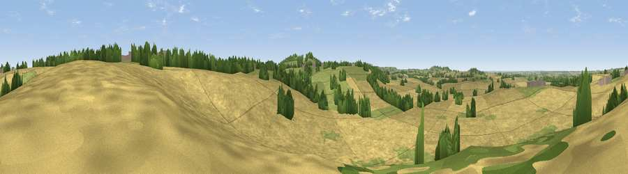

Viewpoint near Staverton
#35564 in England · top 64% of its area beats it · near StavertonThe view, rendered

A 360° render of this exact spot computed from the terrain model, tree cover and land cover — summer colours, afternoon light, calibrated against photographs of famous viewpoints. Real trees, hedges and buildings will differ in detail.
The panorama
Grey silhouette: terrain skyline in each direction (720 bearings, Earth curvature and refraction included). Dashed green: skyline with trees (+15 m) and buildings (+8 m) as obstacles. Blue strip: how far the ground is visible on each bearing.
Where the view opens
Wedge length = distance to the farthest visible ground on that bearing (vegetation-aware). Rings at 10, 25 and 50 km.
What fills the view
78% cropland · 16% grassland · 6% woodland ·
Angular shares of the visible panorama (visual magnitude), not map area. Landscape diversity 0.29 (0–1 Shannon).
Key numbers
More beautiful places nearby
The staircase of upgrades: each row has a higher view potential than everything closer. Driving times are estimates from straight-line distance, calibrated against real road routing — check an actual route before setting out.
| Place | Direction | Drive | Score |
|---|---|---|---|
| Big Hill - Staverton Clump | S · 2 km | ~5 min | 68.4 |
| Viewpoint near Northend | SW · 19 km | ~32 min | 69.7 |
| Viewpoint near Northend | SW · 19 km | ~32 min | 70.3 |
| Viewpoint near Radway | SW · 22 km | ~37 min | 71.7 |
| Viewpoint near Ilmington | WSW · 40 km | ~59 min | 72.6 |
| Viewpoint near Meon Vale | WSW · 41 km | ~61 min | 77.0 |
| Broadway Hill | WSW · 51 km | ~72 min | 77.7 |
| Viewpoint near Elmley Castle | WSW · 62 km | ~84 min | 80.5 |
52.26491, -1.19808 · source: screening · position refined by local search. Computed location — check access rights before visiting.